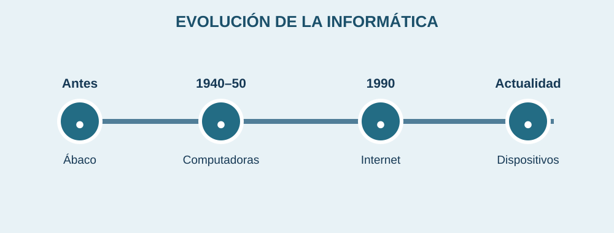

Historia y evolución de la informática

La informática no apareció de un día para otro. Su desarrollo comenzó con herramientas sencillas para contar y continuó con máquinas que podían realizar cálculos cada vez más complejos.
Para revisar las etapas, haz clic en cada apartado:
El ábaco es uno de los ejemplos más antiguos de herramientas usadas para hacer cálculos.
En el siglo XX aparecieron computadoras electrónicas que ocupaban mucho espacio y realizaban operaciones para investigación y otras tareas.
Las computadoras personales se hicieron comunes en hogares y oficinas. Después, internet permitió conectar equipos y compartir información.
Hoy usamos teléfonos, tabletas, computadoras y servicios en línea para actividades cotidianas.
¿Por qué ha sido importante?
Los avances han permitido trabajar con grandes cantidades de información en menos tiempo. También facilitaron la comunicación entre personas y el acceso a recursos educativos.
Antes las computadoras ocupaban salas completas; hoy existen dispositivos que caben en una mano.